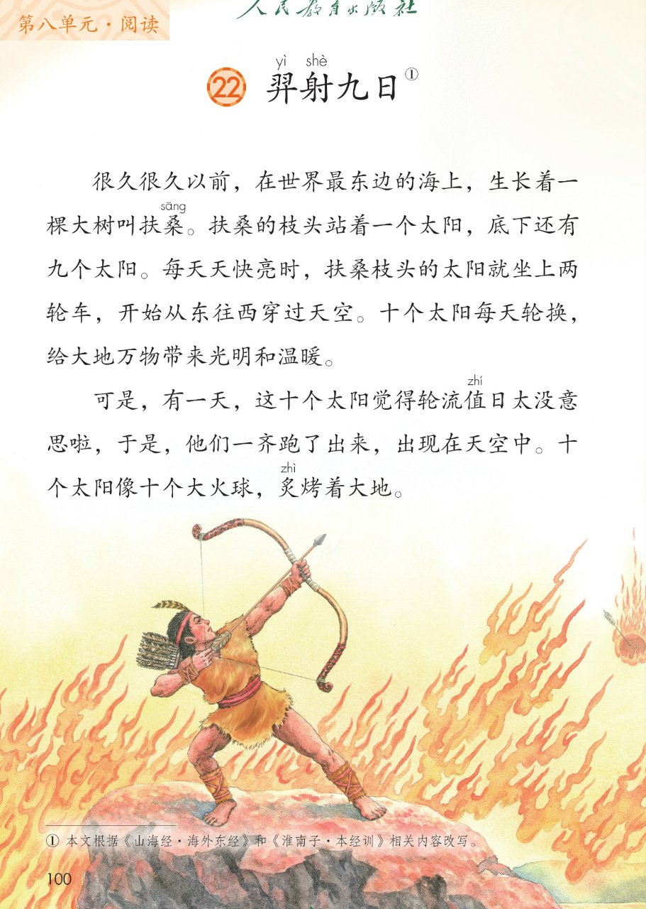
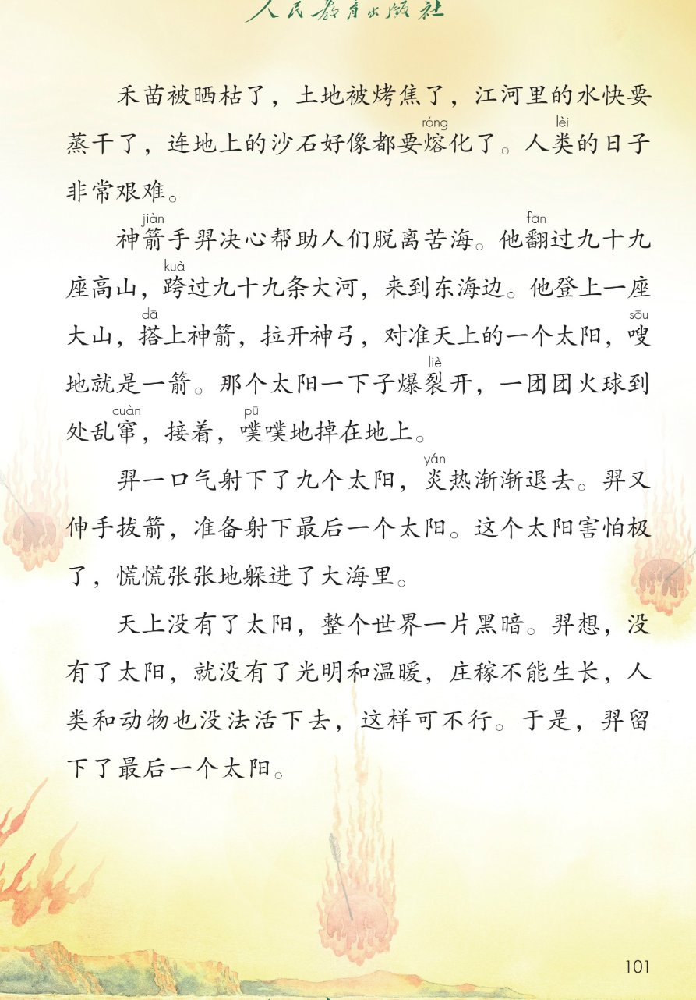
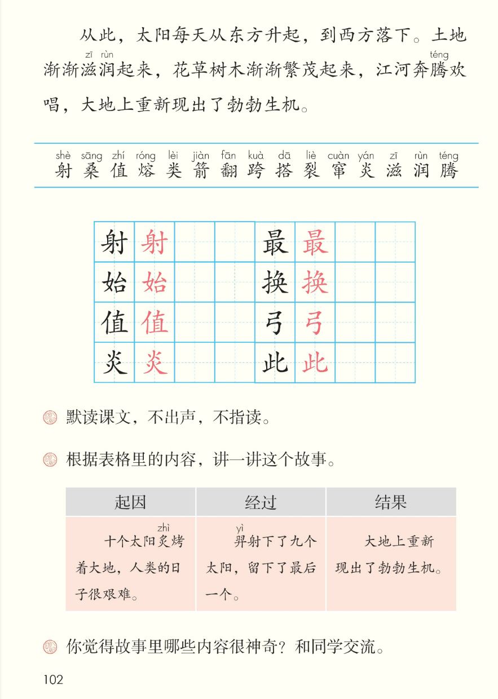

×
🔊 手机听不到声音怎么办？
① 先把手机
媒体音量调大 ，确认没开静音、没连蓝牙耳机；在微信里打开的，点右上角「⋯ → 用浏览器打开」。
② 还是没声音？到应用商店免费下载
Microsoft Edge 浏览器 （它自带朗读发声），用它打开本页面就能出声。
③ 换了 Edge 仍然没声音，说明这部手机的
硬件/系统不支持 网页朗读（多为老旧机型）；近几年买的新手机一般都能正常播放。
→ 打开声音自检
🏹 第 22 课《羿射九日》· 有声图文带读
统编版语文 · 第八单元·阅读 · 课本 第 100~102 页 · 神话故事
课文 7 段 · 共 20 句
会认字 15
会写字 8
听写词 10
近义词 4 组
深入理解 8 题
本课本领 默读·借助表格讲故事·读神话
🎧 五步学（可随时点任意一句、一个字、一个词单独听）： ① 听读课文 ——七段神话故事，一句一句读，读到哪一句哪一句发光；开「跟读」后读完一句留时间让你自己读。② 学字词 ——15 个会认字、8 个会写字（含书写提示），点一个读一个。③ 词语·听写·造句 ——先读神话词语积累，再听写 10 个词（读两遍→你写→报答案→听示范句），最后听 4 组近义词辨析。④ 深入理解 ——8 道题（认知 / 理解 / 运用 / 拓展），开放题答案不唯一，先想后看。⑤ 分节朗读·想象画面 ——按五步想象羿射九日的画面，再听七位朗读者分段读这篇课文。
📚 第八单元·阅读（本课定位）： 语文园地七 → 第22课《羿射九日》（本单元第 1 课） → 后续课文等学到再补
点段前的 ①②③④⑤⑥⑦ 听整段
🔁 跟读模式：关
👁 隐藏注音（自测用）
注音只标本课要认、要写的字和课本明确标了音的字，读音来自课本第 102 页生字表
🎤 朗读要求（老师标准） 羿 读第四声，射 读第四声，桑 读第一声，值 读第二声，熔 读第二声，类 读第四声，箭 读第四声，翻 读第一声，跨 读第四声，搭 读第一声，裂 读第四声，窜 读第四声，炎 读第二声，滋 读第一声，润 读第四声，腾 读第二声；炙 烤的炙读第四声；不添字、不漏字 ：逗号停得短，句号停得长，一句一句读清楚；读出神话的神奇 ：十个太阳跑出来读得着急，羿射日读得干脆、有力量；默读不出声、不指读 ：在心里读，眼睛看，脑子想。
①
很久很久以前，在世界最东边的海上，生长着一棵大树叫扶桑sāng 。
扶桑sāng 的枝头站着一个太阳，底下还有九个太阳。
每天天快亮时，扶桑sāng 枝头的太阳就坐上两轮车，开始从东往西穿过天空。
十个太阳每天轮换，给大地万物带来光明和温暖。
②
可是，有一天，这十个太阳觉得轮流值zhí 日太没意思啦，于是，他们一齐跑了出来，出现在天空中。
十个太阳像十个大火球，炙zhì 烤着大地。
③
禾苗被晒枯了，土地被烤焦了，江河里的水快要蒸干了，连地上的沙石好像都要熔róng 化了。
人类lèi 的日子非常艰难。
④
神箭jiàn 手羿yì 决心帮助人们脱离苦海。
他翻fān 过九十九座高山，跨kuà 过九十九条大河，来到东海边。
他登上一座大山，搭dā 上神箭jiàn ，拉开神弓，对准天上的一个太阳，嗖sōu 地就是一箭jiàn 。
那个太阳一下子爆裂liè 开，一团团火球到处乱窜cuàn ，接着，噗pū 噗pū 地掉在地上。
⑤
羿yì 一口气射shè 下了九个太阳，炎yán 热渐渐退去。羿yì 又伸手拔箭jiàn ，准备射shè 下最后一个太阳。这个太阳害怕极了，慌慌张张地躲进了大海里。
⑥
天上没有了太阳，整个世界一片黑暗。
羿yì 想，没有了太阳，就没有了光明和温暖，庄稼不能生长，人类lèi 和动物也没法活下去，这样可不行。于是，羿yì 留下了最后一个太阳。
⑦
从此，太阳每天从东方升起，到西方落下。
土地渐渐滋zī 润rùn 起来，花草树木渐渐繁茂起来，江河奔腾téng 欢唱，大地上重新现出了勃勃生机。
🤔 想一想（点我可跳过）
点一张图，听读整页

第 100 页 · 课文前两段

第 101 页 · 课文三至六段

第 102 页 · 结尾段·生字表·课后题
📖 人教版《语文》二年级下册 · 课本第 100~102 页 · 图片仅供个人学习，版权归人民教育出版社所有
点一个字，听读音、词语和课文里的句子
结构、部首、笔画与书写提示为通用规范，供参考，以教材和老师的指导为准
射
shè
射箭 · 射日
10 画 · 左右（身）
身字旁写窄，寸字写稳
始
shǐ
开始 · 始终
8 画 · 左右（女）
女字旁写窄，台字写稳
值
zhí
值日 · 值班
10 画 · 左右（亻）
单人旁写窄，直字写稳
炎
yán
炎热 · 炎热
8 画 · 上下（火）
上火小下火大，点撇对称
最
zuì
最后 · 最好
12 画 · 上下（曰）
上面曰字写扁，下面取字写稳
换
huàn
轮换 · 交换
10 画 · 左右（扌）
提手旁写窄，奂字写稳
弓
gōng
神弓 · 弓箭
3 画 · 独体字（弓）
横折、横、竖折折钩，弯而有劲
此
cǐ
从此 · 因此
6 画 · 左右（止）
左边止字末横变提，右边匕字写稳
点一行，听词语和课后题的答案
📖 课后题（课本第 102 页照录） ：① 默读课文，不出声，不指读。 ② 根据表格里的内容，讲一讲这个故事（起因：十个太阳炙烤着大地，人类的日子很艰难 / 经过：羿射下了九个太阳，留下了最后一个 / 结果：大地上重新现出了勃勃生机）。 ③ 你觉得故事里哪些内容很神奇？和同学交流。
轮换 轮换 轮流
光明 光明 明亮
艰难 艰难 困难
勃勃生机 勃勃生机 生机勃勃
读两遍 → 你在纸上写 → 报答案 → 听示范句
准备听写 · 共 10 个词
○ ○ ○
点下面的「开始听写」，听到一个词就写一个词。
▶ 开始听写
🔁 再读一遍
👁 看答案
点词听读，点句子听示范句，再自己说一句
1 射箭 会写字 · 射
示范句：神箭手羿搭上神箭射箭。
✏️ 我也能说：谁在射箭
2 开始 会写字 · 始
示范句：太阳开始从东往西穿过天空。
✏️ 我也能说：什么开始了
3 值日 会写字 · 值
示范句：今天轮到我值日。
✏️ 我也能说：谁值日
4 炎热 会写字 · 炎
示范句：炎热的夏天到了。
✏️ 我也能说：什么很炎热
5 最后 会写字 · 最
示范句：羿留下了最后一个太阳。
✏️ 我也能说：什么是最后的
6 轮换 会写字 · 换
示范句：十个太阳每天轮换。
✏️ 我也能说：什么在轮换
7 弓箭 会写字 · 弓
示范句：羿搭上神箭，拉开神弓。
✏️ 我也能说：什么样的弓
8 从此 会写字 · 此
示范句：从此，太阳每天从东方升起。
✏️ 我也能说：从此怎么样了
9 神箭手 课文词 · 箭
示范句：神箭手羿决心帮助人们脱离苦海。
✏️ 我也能说：谁是神箭手
10 慌慌张张 课文词
示范句：这个太阳慌慌张张地躲进了大海里。
✏️ 我也能说：谁慌慌张张
相同点 / 不一样在哪 / 各造一句
温暖 — 暖和
相同：都表示不冷、让人觉得舒服 。
不一样：温暖 多写阳光、心里觉得暖；暖和 多写天气、身体觉得暖。
温暖：太阳给大地带来光明和温暖。
艰难 — 困难
相同：都表示不容易、很辛苦 。
不一样：艰难 强调日子、行动辛苦难熬；困难 强调事情不好办、有阻碍。
艰难：人类的日子非常艰难。
慌慌张张 — 急急忙忙
相同：都表示心里着急、动作快 。
不一样：慌慌张张 带点害怕、乱了方寸；急急忙忙 只是赶时间。
慌慌张张：太阳慌慌张张地躲进了大海里。
渐渐 — 慢慢
相同：都表示一点一点地变化 。
不一样：渐渐 多写变化需要时间；慢慢 多写动作速度不快。
渐渐：土地渐渐滋润起来。
像……（比喻） 十个太阳像十个大火球，炙烤着大地
一口气 羿一口气射下了九个太阳
慌慌张张（AABB 式） 这个太阳害怕极了，慌慌张张地躲进了大海里
勃勃生机 大地上重新现出了勃勃生机
标「答案不唯一」的题，说得有道理都对
认知 十个太阳原来是怎么值日的？后来他们做了什么？看解析
🤔 想一想
解析：
坐两轮车，从东往西，每天轮换
觉得没意思，一齐跑出来
像十个大火球炙烤着大地
认知 十个太阳一齐跑出来后，大地变成了什么样？看解析
🤔 想一想
解析：
禾苗被晒枯了
被烤焦了，沙石好像都要熔化了
水快要蒸干了
人类的日子非常艰难
理解 神箭手羿为什么决心帮助人们脱离苦海？他射日是怎么做的？看解析
🤔 想一想
解析：
太阳炙烤大地，日子艰难
翻过九十九座高山，跨过九十九条大河
搭上神箭，拉开神弓，一口气射下九个
理解 羿为什么留下了最后一个太阳？看解析
🤔 想一想
解析：
整个世界一片黑暗
庄稼不能生长，人和动物没法活
羿留下了最后一个太阳
理解 根据表格里的内容，讲一讲这个故事。看解析
🤔 想一想
解析：
十个太阳炙烤大地，日子艰难
羿射下九个，留下最后一个
大地重新现出勃勃生机
运用 你觉得故事里哪些内容很神奇？找出来和同学交流。看解析
🤔 想一想
解析：
坐两轮车、九十九座高山、躲进大海
生活中做不到的就是神奇
🌈 答案不唯一，说得有道理都对
运用 课文写“十个太阳像十个大火球”。用“……像……”说一句话。看解析
🤔 想一想
解析：
什么像什么，两样东西要相像
月亮、云朵、影子都可以
🌈 答案不唯一，说得有道理都对
拓展 这是一篇神话故事。你还读过或听过哪些神话故事？看解析
🤔 想一想
解析：
读过的神话故事都可以
讲给同学听，说最神奇的地方
🌈 答案不唯一，说得有道理都对
点一步，听这一步
1
太阳轮值
2
十日炙烤
5
大地复苏
💬 想象支架：先 想太阳轮值 → 再 想十日炙烤 → 接着 想羿射九日 → 然后 想留下一个 → 最后 想大地复苏。
点一张卡，听这一节的句子
🌈 第1节·朗读者
第1节：很久很久以前，在世界最东边的海上，生长着一棵大树叫扶桑。
💬 开头一段，讲十个太阳轮值，读得平静、美好
🌈 第2节·朗读者
第2节：可是，有一天，这十个太阳觉得轮流值日太没意思啦，于是，他们一齐跑了出来，出现在天空中。
💬 十日烤大地，读得着急
🌈 第3节·朗读者
第3节：禾苗被晒枯了，土地被烤焦了，江河里的水快要蒸干了，连地上的沙石好像都要熔化了。
💬 苦难一段，读得低沉、难过
🌈 第4节·朗读者
第4节：神箭手羿决心帮助人们脱离苦海。
💬 羿射日一段，读得坚定、干脆有力量
🌈 第5节·朗读者
第5节：羿一口气射下了九个太阳，炎热渐渐退去。
💬 射九留一一段，读得畅快又留悬念
🌈 第6节·朗读者
第6节：天上没有了太阳，整个世界一片黑暗。
💬 想明白一段，读得沉稳、欣慰
🌈 第7节·朗读者
第7节：从此，太阳每天从东方升起，到西方落下。
💬 结尾一段，读得欢快，充满生机